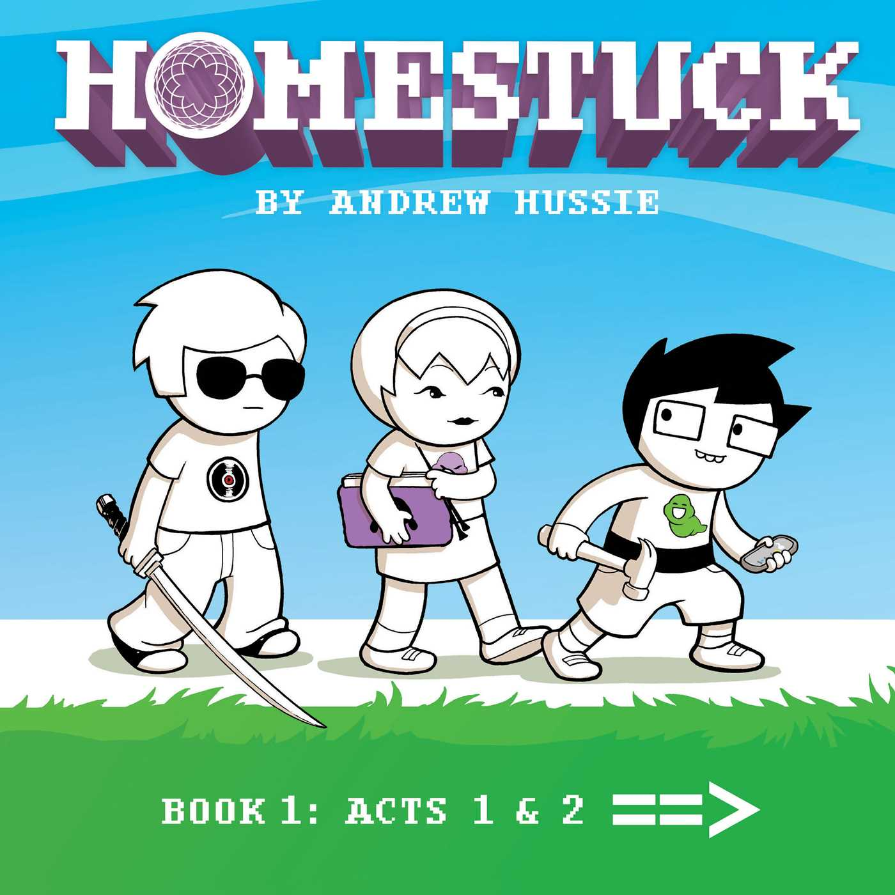

Well, it's a lot of things. A piece of fiction, and also a deconstruction of fiction. An irreverant comedy, and also a thoughtful drama. A beacon for fandom, and also a condemnation of it. More than anything, it is a webcomic that became an internet phenomenon that shaped and was shaped by the online subcultures of the 2010s.

Earlier this year, after many years of hearing about this creation, but being too intimidated by its over-8000-page length and idiosyncratic methods of presenting itself, I finally took the plunge and read through the whole thing. Since then, it has filled many of my thoughts, and I feel as if I never run out of things to say about it. With that being the case, what better way to get out these thoughts than a comprehensive guide on what exactly this thing is and why it means so much to me.
That's exactly what this is.